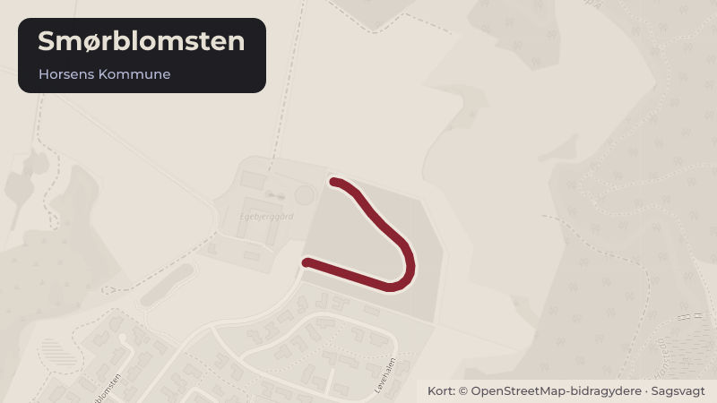

Besluttet 1. september, Økonomi- og Erhvervsudvalget, Horsens
ØK Fastsættelse af salgspriser for byggegrunde på Smørblomsten i Egebjerg
Der skal fastsættes salgspriser for de kommunale byggegrunde i den nye udstykning Smørblomsten i Egebjerg, så at grundene kan udbydes til salg. Sagen afgøres af Byrådet.
Bydele i sagen: Egebjerg
Steder i sagen: Smørblomsten

Kort fortalt
- Hvem
- Økonomi- og Erhvervsudvalget, Horsens Kommune
- Hvornår
- Tirsdag 1. september 2026
- Status
- Besluttet. Økonomi- og Erhvervsudvalget tiltrådte indstillingen.
Læs hele sagen Kommunens egen tekst
Indstilling
Direktionen indstiller, at
1. Byrådet godkender salgspriserne for byggegrundene i udstykningen Smørblomsten i
Egebjerg som anført i sagsfremstillingen.
2. Byrådet godkender, at grundene udbydes til salg til de godkendte mindstepriser og
sælges til højstbydende.
3. Byrådet godkender, at grundene sælges i almindeligt udbud, jf. Horsens Kommunes
almindelige salgsvilkår for salg af parcelhusgrunde.
Sagsfremstilling
Kommunen har gennemført byggemodning af boligområdet Smørblomsten i Egebjerg, hvor der
er etableret 25 parcelhusgrunde.
Udstykningen understøtter kommunens bosætningsstrategi ved at skabe attraktive
byggegrunde til både nye og nuværende borgere.
For at kunne påbegynde salget skal Byrådet fastsætte salgspriser for grundene.
Ved fastsættelsen af priserne er der lagt vægt på:
den aktuelle markedsværdi for sammenlignelige byggegrunde
prisniveauet i omkringliggende byer, kommuner og private udstykninger
områdets beliggenhed, størrelse og attraktivitet
kommunens samlede investering i arealerhvervelse og byggemodning
forventningerne til afsætningsmulighederne.
Administrationen har undersøgt prisniveauet for sammenlignelige byggegrunde i lokalområdet
og vurderer, at følgende priser afspejler markedsniveauet.
Adresse
Nr.
M2
Pris inkl. moms
Smørblomsten
Smørblomsten
Smørblomsten
Smørblomsten
Smørblomsten
Smørblomsten 11
Smørblomsten 13
Smørblomsten 15
Smørblomsten 17
Smørblomsten 19
Smørblomsten
Smørblomsten
Smørblomsten
Smørblomsten
Smørblomsten 10
Smørblomsten 12
Smørblomsten 14
Smørblomsten 16
Smørblomsten 18
Smørblomsten 20
Smørblomsten 22
Smørblomsten 24
Smørblomsten 26
Smørblomsten 28
Smørblomsten 30
I alt
Grundene varierer i størrelse fra 800 m² til 1.020 m². De foreslåede salgspriser spænder fra
900.000 kr. til 1.700.000 kr. inkl. moms, hvilket giver en gennemsnitlig salgspris på 1.310.800
kr. inkl. moms pr. grund.
Der henvises til den vedlagte vurderingsrapport for uddybning af prisfastsættelsen.
Økonomi:
Salg af grundene forventes at indbringe samlet 32.770.000 kr.
Salgsindtægterne indgår i finansieringen af kommunens investering i arealerhvervelse og
byggemodning. Der må forventes en løbende indtægt i takt med, at grundene sælges.
LONO/mm
Beslutning
Økonomi- og Erhvervsudvalget tiltrådte indstillingen.
Michael Nedersøe deltog ikke i mødet.
Kilde: Horsens Kommune, Økonomi- og Erhvervsudvalget, referat fra mødet tirsdag 1. september 2026, punkt 2. Læs den originale sag hos kommunen.